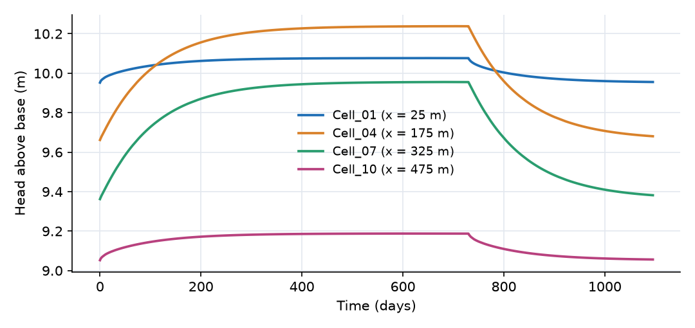
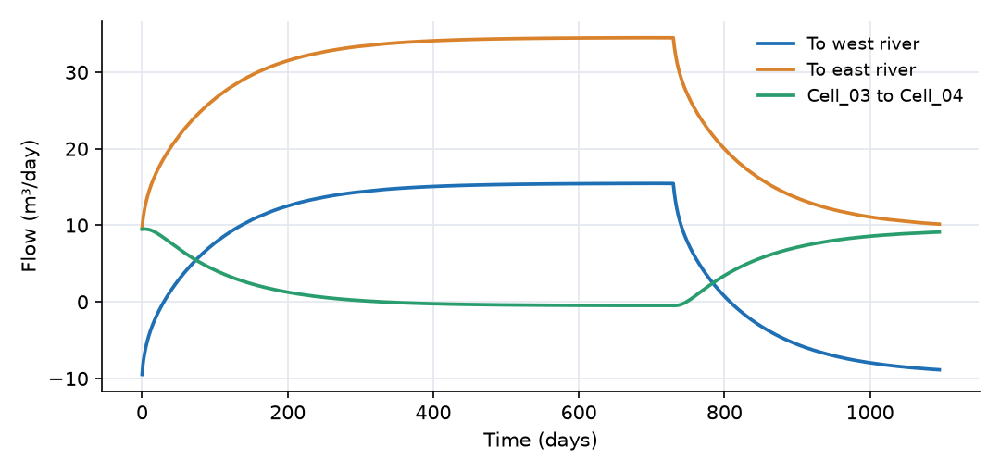

What this model represents
A strip of unconfined (water table) aquifer lies between two rivers that cut through its full thickness. The west river stands at 10 m and the east river at 9 m above the impermeable base, so groundwater flows from west to east. Recharge from infiltrating rain then raises the water table between the rivers into a mound, which can rise above the higher river. When it does, a groundwater divide forms inside the aquifer and the west river, which was losing water to the aquifer, starts to gain water from it.
This is the textbook Dupuit-Forchheimer problem, and it has a closed-form steady-state solution. That makes it a good first groundwater model: the numerical result can be checked against the analytical one, and the transient shows how fast an aquifer responds to a change in recharge. The same structure, extended to two dimensions or coupled to soil and stream components, is the basis of larger catchment groundwater models.
How it works
The expressions below are taken from unconfined_groundwater.json.
Aquifer cells. Each Unconfined Groundwater cell stores water in its pores. With storage S, plan area A, specific yield S_y and base elevation z_b:
h = S / (S_y · A) + z_b (water table elevation, piezometric_head)
b = h − z_b (saturated thickness, depth)
dS/dt = R · A + Σ Q_links
where R is the recharge rate per unit area read from recharge.csv. The initial storage is A · (h_initial − z_b) · S_y.
Flow between cells (UC_groundwater_link) is Darcy flow through the saturated thickness, with the Dupuit assumption that flow is horizontal and the head is uniform over the vertical:
Q = c · ½(K_s + K_e) · (h_s − h_e)/L · w · ½(b_s + b_e)
with L = 50 m the distance between cell centres and w = 100 m the width of the strip. Because the base is flat, (h_s − h_e)·(b_s + b_e)/2 = (h_s² − h_e²)/2, so this is a direct discretization of the Dupuit equation in terms of h². The factor c reduces the flow linearly to zero when the upstream cell's saturated thickness falls within cutoff_depth (0.05 m) of its residual thickness; it equals 1 throughout this run.
River boundaries (unconfined_groundwater_to_fixedhead):
Q = K · (h_cell − H_river)/L · w · b_cell
with L = 25 m, the distance from the edge cell's centre to the river. Positive Q is discharge from the aquifer to the river.
Initial condition. The heads start at the steady state without recharge, h²(x) = h₀² − (h₀² − h_L²)·x/L. Under that profile 9.5 m³/day enters from the west river and leaves through the east river.
Analytical steady state with recharge. For a uniform recharge R between fixed heads h₀ at x = 0 and h_L at x = L, the Dupuit-Forchheimer solution is
h²(x) = h₀² − (h₀² − h_L²)·x/L + (R/K)·x·(L − x)
With h₀ = 10 m, h_L = 9 m, L = 500 m, K = 5 m/day and R = 0.001 m/day, the mound peaks at the water divide
x_d = L/2 − K(h₀² − h_L²)/(2RL) = 155 m, with h(x_d) = 10.237 m
Of the 50 m³/day of recharge, 15.5 m³/day flows west and 34.5 m³/day flows east. The time the aquifer takes to adjust is of the order of S_y·L²/(π²·K·b) ≈ 100 days.
What to look for in the results
Agreement with the analytical solution. By day 729, after two years of constant recharge, the model is at steady state. Every cell lies within 6 mm of the Dupuit-Forchheimer parabola:
| Cell | x (m) | No recharge (m) | Analytical, with recharge (m) | Model, day 729 (m) | Difference (mm) |
|---|---|---|---|---|---|
| Cell_01 | 25 | 9.952 | 10.071 | 10.077 | +5.8 |
| Cell_02 | 75 | 9.856 | 10.175 | 10.180 | +5.4 |
| Cell_03 | 125 | 9.760 | 10.229 | 10.234 | +5.1 |
| Cell_04 | 175 | 9.662 | 10.234 | 10.238 | +4.9 |
| Cell_05 | 225 | 9.563 | 10.189 | 10.194 | +4.6 |
| Cell_06 | 275 | 9.463 | 10.096 | 10.100 | +4.6 |
| Cell_07 | 325 | 9.362 | 9.951 | 9.956 | +4.6 |
| Cell_08 | 375 | 9.260 | 9.753 | 9.758 | +4.6 |
| Cell_09 | 425 | 9.157 | 9.499 | 9.503 | +4.7 |
| Cell_10 | 475 | 9.053 | 9.183 | 9.188 | +4.9 |
The "no recharge" column is also the model's initial state, reproduced exactly. The small, nearly uniform excess with recharge comes from the edge cells: recharge falling on the 25 m between a cell centre and the river is lumped at the centre, which raises the head by about R·(Δx/2)²/(2K·b) ≈ 6 mm. Smaller cells reduce it.
- The water divide. At steady state, Flow_03_04 is −0.48 m³/day (westward) and Flow_04_05 is +4.52 m³/day (eastward), so the divide lies inside Cell_04 (150 to 200 m), consistent with the analytical 155 m.
- A river that switches from losing to gaining. West_exchange starts at −9.5 m³/day (the west river feeds the aquifer). It crosses zero on day 30 and reaches +15.5 m³/day at steady state, matching the analytical 15.5 m³/day. The east river receives 34.5 m³/day. The two sum to the 50 m³/day of recharge.
- Response time. More than 85% of the rise happens in the first 200 days, consistent with the ~100 day time scale. After recharge stops at day 730, the mound decays on the same time scale: the west river turns back into a losing river on day 808, and by day 1095 the heads are back within about 20 mm of their starting values.
Assumptions and limitations
- Dupuit assumptions: flow is horizontal and the head does not vary with depth. This is accurate when the aquifer is much longer than it is thick (here 500 m against about 10 m), and it is poor close to seepage faces and partially penetrating rivers.
- The aquifer is homogeneous and isotropic with a flat, impermeable base. The flow is one dimensional across a 100 m wide strip, with no flow through the north and south sides.
- The rivers are fixed heads with no streambed resistance. Their stages do not respond to the exchange.
- Recharge is uniform in space and arrives at the water table immediately. There is no unsaturated zone delay and no evapotranspiration from the water table.
Model diagram
Hover a block or link to see its name and type. Arrows show the positive flow direction.
Components
Click a component to see every property set in the model file, with units and meaning.
Blocks 12
Storage compartments: each holds water (and dissolved or particulate mass) and has a state that evolves in time.
River_Westfixed_headA river that fully penetrates the aquifer at x = 0, holding the water table at 10 m above the aquifer base.
fixed_head: Fixed-head boundary
| Property | Value | Unit | Meaning |
|---|---|---|---|
| Initial Storage | 100000 | m3 | |
| Head | 10.0 | m |
10 × Unconfined Groundwater cellUnconfined Groundwater cell · unconfined_groundwaterTen aquifer cells (Cell_01 at the west end to Cell_10 at the east end), each 50 m long in the flow direction and 100 m wide (5000 m²). Base at 0 m, hydraulic conductivity 5 m/day, specific yield 0.2. Each receives recharge from recharge.csv. The initial heads are the steady state without recharge.
recharge.csv. The initial heads are the steady state without recharge.Cell_01, Cell_02, Cell_03, Cell_04, Cell_05, Cell_06, Cell_07, Cell_08 …
Showing properties of Cell_01.
Unconfined Groundwater cell: Unconfined Aquifer Cell
| Property | Value | Unit | Meaning |
|---|---|---|---|
| Cell area | 5000 | m2 | Cell area |
| Base Elevation | 0 | m | Base Elevation |
| Hydraulic Conductivity | 5.0 | m/day | Hydraulic Conductivity |
| Initial Piezometric head | 9.9524 | m | Initial Piezometric head; Piezometric head |
| Recharge per unit area | recharge.csv | m/day | Recharge per unit area |
| Specific Yield | 0.2 | Specific Yield |
River_Eastfixed_headA river at x = 500 m, holding the water table at 9 m.
fixed_head: Fixed-head boundary
| Property | Value | Unit | Meaning |
|---|---|---|---|
| Initial Storage | 100000 | m3 | |
| Head | 9.0 | m |
Links 11
Connections that move water (and the mass it carries) between blocks.
West_exchangeunconfined_groundwater_to_fixedhead · unconfined_groundwaterFlow between Cell_01 and the west river over the 25 m half cell. Positive when groundwater discharges to the river, negative when the river loses water to the aquifer.
unconfined_groundwater_to_fixedhead: Unconfined Groundwater to fixed head
| Property | Value | Unit | Meaning |
|---|---|---|---|
| Length | 25.0 | m | Length |
| Interface Width | 100.0 | m | Interface Width |
9 × UC_groundwater_linkUC_groundwater_link · unconfined_groundwaterDupuit flow between neighbouring cells (Flow_01_02 to Flow_09_10), positive from west to east.
Flow_01_02, Flow_02_03, Flow_03_04, Flow_04_05, Flow_05_06, Flow_06_07, Flow_07_08, Flow_08_09 …
Showing properties of Flow_01_02.
UC_groundwater_link: Unconfined Aquifer link
| Property | Value | Unit | Meaning |
|---|---|---|---|
| Centroid to centroid length | 50.0 | m | Centroid to centroid length |
| Width of the connector | 100.0 | m | Width of the connector |
East_exchangeunconfined_groundwater_to_fixedhead · unconfined_groundwaterFlow between Cell_10 and the east river, with the same sign convention: positive means discharge to the river.
unconfined_groundwater_to_fixedhead: Unconfined Groundwater to fixed head
| Property | Value | Unit | Meaning |
|---|---|---|---|
| Length | 25.0 | m | Length |
| Interface Width | 100.0 | m | Interface Width |
Input files
recharge.csv | Recharge rate per unit area (m/day) versus time (day): 0.001 m/day (1 mm/day, 365 mm/year) for the first 730 days, then zero. Two columns, comma separated, no header. |
Simulation settings
| Start time | 0 |
| End time | 1095 |
| Initial time step | 0.01 |
| Write interval (steps) | 10 |
| Newton-Raphson tolerance | 0.001 |
Results
Produced by running the downloaded model unchanged.

